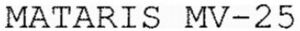

Trade Mark Journal No.2025/042 17 October 2025
WO0000001878888 (12,13)
Office of origin: France
Date of International Registration:23 July 2025
Date of designation in the UK:
23 July 2025

International priority date claimed: 13 February 2025
(France)
(5121295)
International priority date claimed: 20 February 2025
(France)
(5123139)
- Class 12
- Military drones; reconnaissance drones; mounts for drone-mounted cameras; armed drones.
- Class 13
- Armed drone for destruction [weapon]; Firearms; ammunition and projectiles; explosives; cannons; mortars (weapons); missiles; machine guns; vehicle-mounted weapons; equipment for launching missiles or projectiles; turrets equipped with cannon, mortar, machine gun, missile, missile launcher; system (equipment and control) for dispersing masking or decoy ammunition; system (equipment and control) for protecting a land, air or naval platform and comprising one or more launch tubes for firing platform masking ammunition in the visible, infrared or millimeter range, or for firing decoy ammunition; masking ammunition; decoy ammunition; propellant charges; practice ammunition; projectile cartridges; exercise arrows [ammunition]; rifles; revolvers; pistols; pyrotechnic devices for mine clearance or ammunition destruction; medium-calibre weapons; gun carriages [artillery]; remotely-controlled or remotely-operated gun carriages [artillery]; naval turrets, i.e. a pivoting platform mounted on a ship and equipped with a weapon or a missile or rocket launcher; gun carriages [artillery] for the navy; remotely-operated or remotely-controlled naval turrets (weapons); pods (airborne gun pods) or gun turrets for aircraft; cartridges; bombs; rockets [projectiles]; torpedoes; shells [projectiles]; artillery shell; guided artillery shell; recoilless firing system for projectiles or rockets (cannon); safety and arming device for ammunition or explosive devices; fuses for explosives; squibs; detonators; igniters [pyrotechnic products]; primings [fuses]; priming relay (for explosives); pyromechanisms, i.e. military or civilian pyrotechnics; pyrotechnic gas generators; pyrotechnic components (products); pyrotechnic actuators; pyrotechnic cylinders (military or civilian pyrotechnic items).
KNDS AMMO FRANCE
Representative: Madame DESROIS Julie Cabinet Chaillot, 16/20 avenue de l'Agent Sarre,, B.P. 74, F-92703 Colombes CEDEX, FRANCE